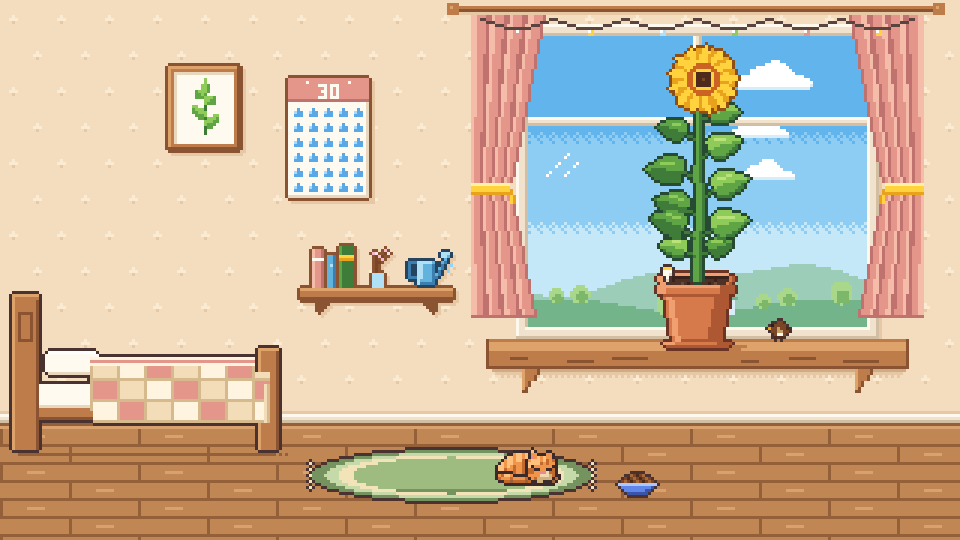
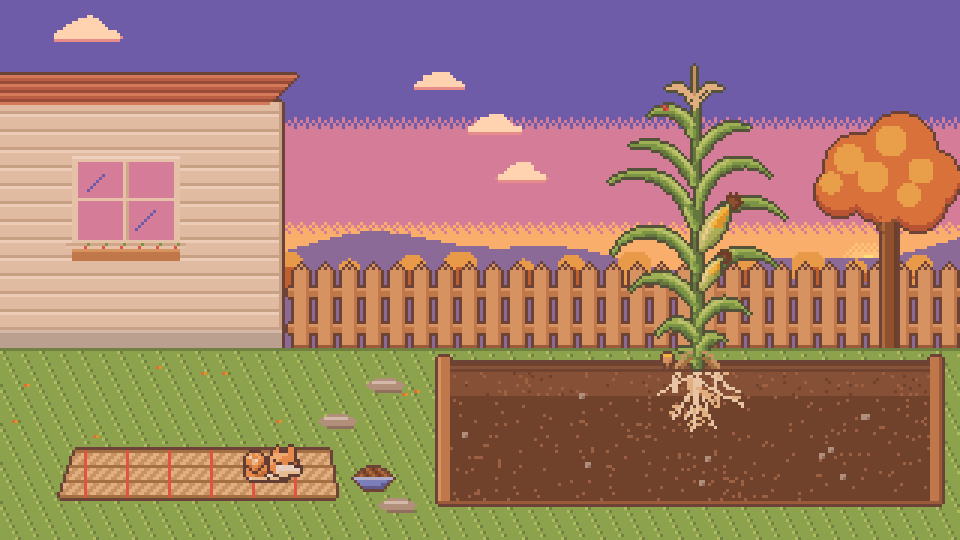
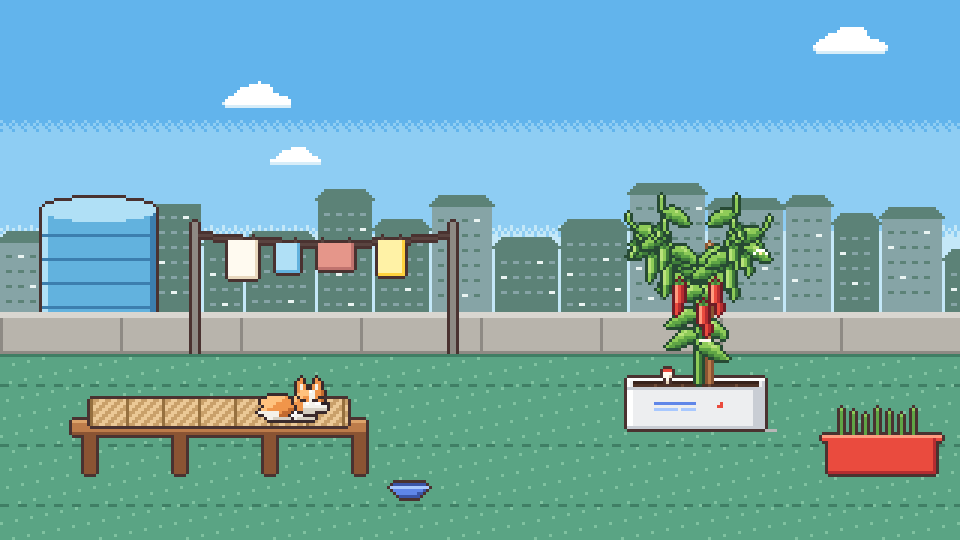
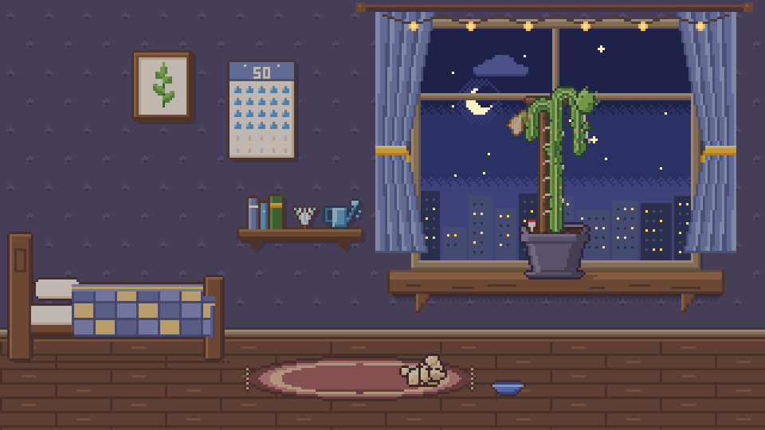
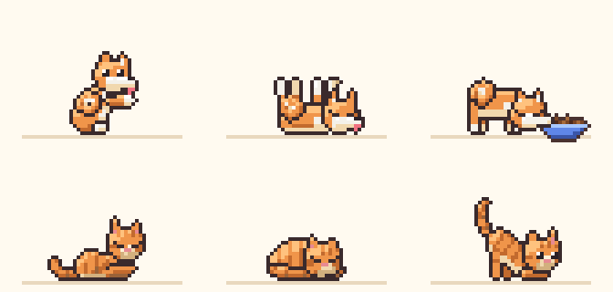

바탕화면에서 키우는
작은 화분
회사 책상에 화분 하나 두는 느낌으로, 일하다 잠깐씩 배경을 보며 쉬어 가요. 하루에 한 번 물을 주면 배경 속 식물이 조금씩 자라고, 깜빡해도 죽지 않아요. 카페트 위에서는 고양이나 강아지가 자고 있어요.

다운로드
지금 판: 0.3.1 테스트판 (2026년 11월 20일) · 모든 판 · 무료이고 결제·광고가 없어요.
세 군데 장소, 27가지 식물



할 수 있는 것
💧 하루 한 번 물 주기
바탕화면의 물뿌리개를 더블클릭하면 물을 줘요. 물을 거르면 잎이 처지지만, 주면 바로 다시 싱싱해져요. 식물은 죽지 않아요.
📖 식물 도감
방 창가 9종, 집 앞 마당 11종, 옥상 텃밭 7종. 안 키워 본 식물은 그림자만 보여요. 끝까지 키우면 자라는 모습을 다시 볼 수 있어요.
🐾 반려동물
고양이 10종·강아지 12종. 밥을 주면 와서 먹고, 간식을 주면 친해져서 “손!” “빵야!”, 꾹꾹이 같은 개인기를 배워요. (윈도우판)
🎨 꾸미기
벽지·커튼·창밖 풍경·카페트·이불 무늬와 색을 바꿔요. 바뀐 모습이 바로 미리보기에 나와요.
🧺 아이콘 숨기기
필요 없는 바탕화면 아이콘을 그림 속 카페트 위로 끌어다 놓으면 숨어요. 카페트를 두 번 누르면 다시 꺼내요. (윈도우판)
🙈 잠깐 숨기기
Ctrl+Alt+H 한 번이면 원래 배경화면으로 돌아가고 물뿌리개·반려동물·알림이 숨어요. 다시 누르면 그대로 돌아와요. (윈도우판)
🔒 인터넷을 쓰지 않아요
로그인도, 서버도 없어요. 기록은 내 컴퓨터에만 저장되고 밖으로 보내는 정보가 없어요.
반려동물 개인기

간식은 하루 3번까지. 강아지는 간식 3번이면 “손!”, 8번이면 “빵야!”를 배우고, 고양이는 3번이면 꾹꾹이, 6번이면 털실 놀이를 해요. 업무 창 위로는 나오지 않고, 바탕화면을 3초쯤 보고 있으면 일어나 돌아다녀요.
자주 묻는 것
정말 무료예요?
네. 결제도 광고도 없어요. 개인이 취미로 만든 테스트판이에요.
배경화면이 바뀌는데, 원래 배경은요?
처음 바꿀 때 원래 배경을 저장해 둬요. 메뉴의 “원래 배경화면으로 되돌리기”나 “완전히 지우기”를 누르면 그대로 돌아가요. 그사이 직접 다른 배경으로 바꿨다면 그 선택은 덮어쓰지 않아요.
컴퓨터가 느려지지 않나요?
평소에는 그림을 다시 그릴 때만 잠깐 일하고 쉬어요(윈도우에서 CPU 0~0.2%, 메모리 약 80MB로 확인).
회사 컴퓨터에서도 돼요?
배경이 눈치 보일 땐 Ctrl+Alt+H로 잠깐 원래 배경화면으로 돌려 둘 수 있어요(윈도우판, 단축키는 바꿀 수 있어요). 배경화면 바꾸기가 막힌 PC에서는 배경 대신 화분만 보이는 작은 창으로 키울 수 있어요. 회사 규칙상 개인 프로그램 설치가 안 된다면 쓰지 말아 주세요.
백신이 막아요.
서명이 없는 새 프로그램이라 잘못 잡힐 수 있어요. 받은 파일이 이 페이지의 GitHub 주소에서 온 것인지 확인해 주세요. 백신의 실시간 보호를 끄라고 안내하지는 않아요. 걱정되면 쓰지 않는 쪽이 안전해요.
지우고 싶어요.
메뉴의 “완전히 지우기”를 먼저 누른 다음 프로그램 파일을 지워 주세요. 지우는 법
의견이나 버그를 알리고 싶어요.
메일로 보내 주세요: ice9863 (골뱅이) gmail.com
의견, 바라는 점, 고쳐야 할 점, 버그 모두 좋아요. 버그라면 어떤 일이 있었는지 한두 줄과 화면 캡처,
있으면 error.log(기록 폴더에 있어요)를 같이 보내 주시면 고치기 쉬워요.